P0/P1 asset review
Fresh reference / before / after / heatmap comparisons for all 16 targeted assets. Identical 1536 × 1024 viewport, DPR 1, reduced motion, fixed original camera, clean browser storage. No image registration or warping.
Important: the metrics below measure each asset's full-scene context crop, including neighboring geometry and background. They are not isolated-model similarity scores or approval percentages. Mixed results and regressions remain visible rather than being marked passed.
platform.application
Mixed metrics: inspect visually. MAE 27.00 → 25.60; SSIM 0.527 → 0.518.
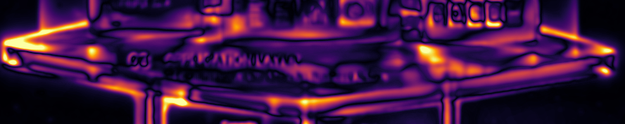
{kind=link}
actor.projects
Both metrics regressed: needs further repair. MAE 34.91 → 35.48; SSIM 0.385 → 0.381.

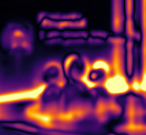
{kind=link}
actor.experts
Both metrics improved; visual acceptance still required. MAE 34.07 → 33.74; SSIM 0.401 → 0.401.
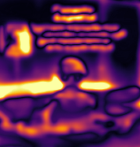
{kind=link}
actor.ai-agents
Both metrics regressed: needs further repair. MAE 31.43 → 31.51; SSIM 0.426 → 0.401.

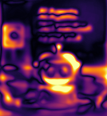
{kind=link}
actor.employees
Mixed metrics: inspect visually. MAE 33.09 → 32.28; SSIM 0.473 → 0.469.
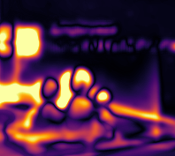
{kind=link}
app.chat
Both metrics improved; visual acceptance still required. MAE 23.14 → 22.34; SSIM 0.547 → 0.551.
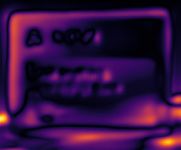
{kind=link}
app.workbench
Both metrics improved; visual acceptance still required. MAE 29.68 → 24.40; SSIM 0.455 → 0.475.
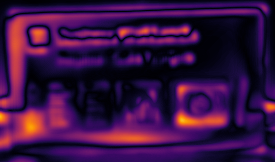
{kind=link}
app.integrations
Mixed metrics: inspect visually. MAE 31.18 → 30.57; SSIM 0.479 → 0.478.
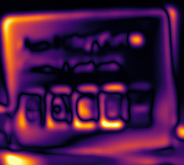
{kind=link}
city.business
Mixed metrics: inspect visually. MAE 39.88 → 38.57; SSIM 0.277 → 0.272.

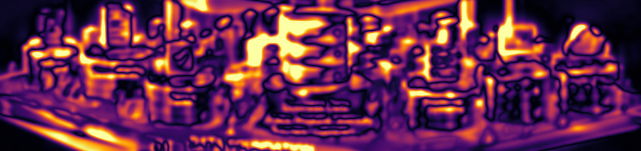
{kind=link}
data.people
Mixed metrics: inspect visually. MAE 34.42 → 34.31; SSIM 0.335 → 0.319.
{kind=link}
data.documents
Mixed metrics: inspect visually. MAE 39.31 → 37.79; SSIM 0.294 → 0.287.
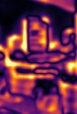
{kind=link}
data.tasks
Mixed metrics: inspect visually. MAE 39.64 → 37.21; SSIM 0.215 → 0.178.
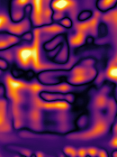
{kind=link}
data.business-data
Mixed metrics: inspect visually. MAE 49.74 → 48.91; SSIM 0.174 → 0.158.

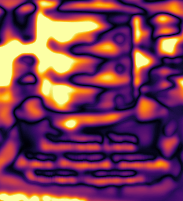
{kind=link}
data.systems
Mixed metrics: inspect visually. MAE 42.10 → 41.55; SSIM 0.187 → 0.178.
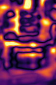
{kind=link}
data.devices
Both metrics improved; visual acceptance still required. MAE 42.55 → 38.97; SSIM 0.217 → 0.238.
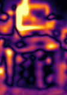
{kind=link}
data.external-data
Both metrics improved; visual acceptance still required. MAE 33.98 → 31.25; SSIM 0.348 → 0.353.

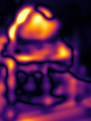
{kind=link}